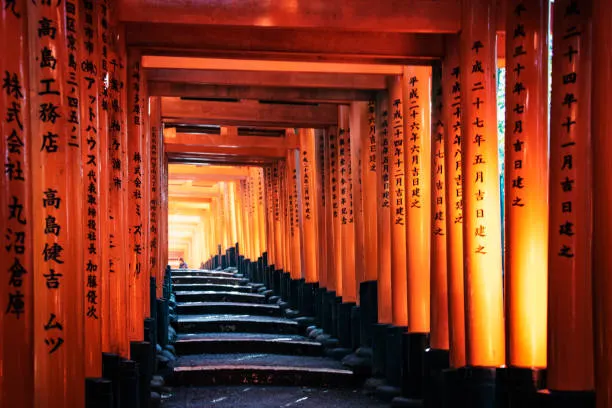

Day 4: Kyoto's Tranquil Beauty
Kyoto greeted me with calm paths, gentle winds, and history in every corner. I visited temples, wore a yukata, and enjoyed matcha everything!
- ⛩️ Fushimi Inari Shrine
- 🎍 Bamboo Grove in Arashiyama
- 🍵 Matcha parfait near Gion